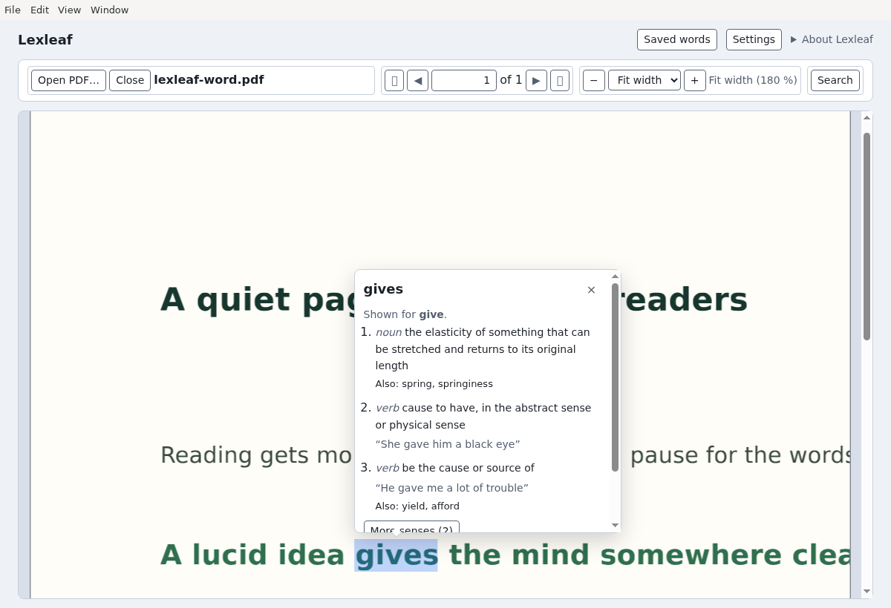
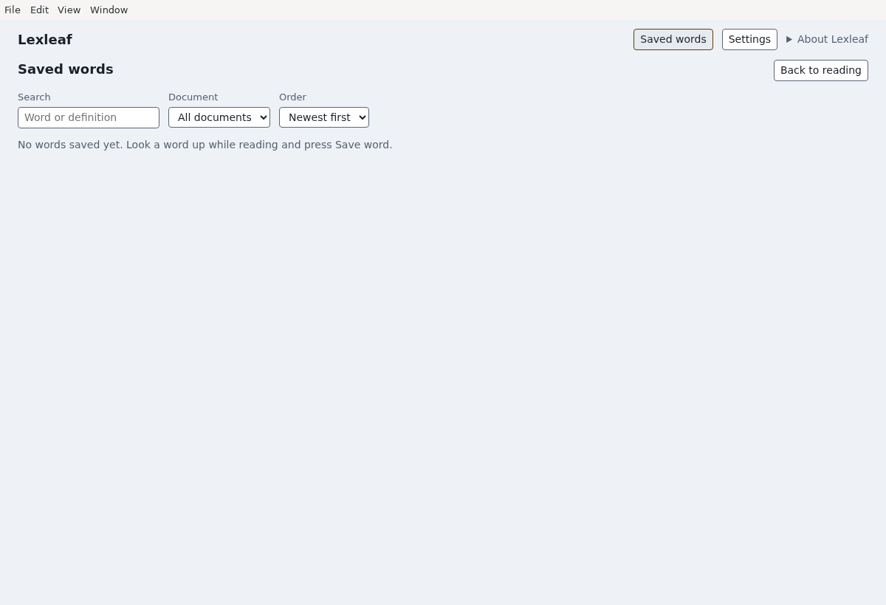

Look up in place
Double-click a word and read its meaning in a small popup over the page. Every sense, with example sentences, from an offline dictionary that comes with the app.
Free and open source · Works offline
Lexleaf is a reader for PDF and EPUB books that explains an unfamiliar word where you found it. Double-click it, read the meaning, save it for later, keep reading.
Windows x64 · Linux x86_64 · macOS test build · Offline dictionary · No account

For curious readers
One window for the book and the dictionary. No tab switching, no account, nothing sent anywhere while you read.
Double-click a word and read its meaning in a small popup over the page. Every sense, with example sentences, from an offline dictionary that comes with the app.
Save a definition with one click. Search and sort your saved words by book, and export them as a spreadsheet or an Anki import file.
Dark, light or system appearance. Adjustable zoom, one-page or two-page view, rotation, bookmarks, highlights with notes, and a sidebar for contents and pages.
Also: read aloud with a voice on your computer, print any page or range, bookmarks, notes on highlights, a sidebar with contents and thumbnails, and a back button that returns you to where you were.
A simple reading loop
A PDF or an EPUB: double-click it, drag it onto the window, or use Open. Your place is remembered next time.
Double-click any word for its meaning and examples. Search the book, follow the contents, or mark a passage.
Keep the words and highlights worth returning to. They stay on your computer, in your own library.

Local first
Lexleaf is a desktop application, not a service. Books, saved words, highlights and preferences live on your computer. The dictionary is included, so looking up a word needs no internet.
Choose your way in
Version 0.2.8 · Free,
Apache-2.0
licensed. Every release page also carries SHA256SUMS.txt, so you can check
a download before opening it.
Windows 10 and 11, 64-bit
An installer. It is not signed with a paid certificate, so SmartScreen may ask for extra confirmation.
Download .exex86_64 desktop
A portable AppImage that needs no install, or a Debian package for Ubuntu and similar systems.
Test build · Apple Silicon and Intel
Not signed by Apple yet. After opening it once from System Settings › Privacy & Security, it works normally.
Test build